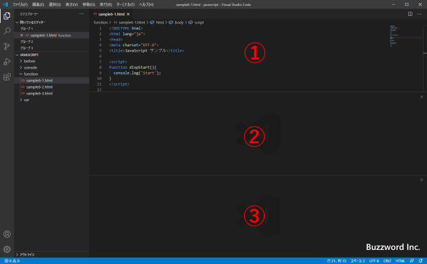
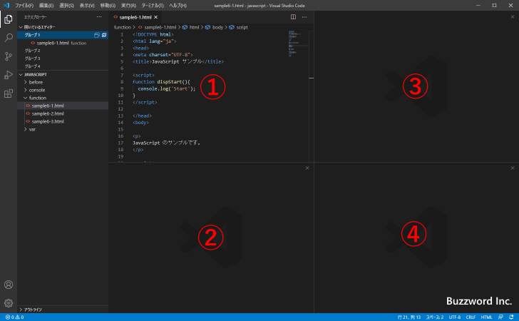

エディターグループのレイアウトを設定する
Visual Studio Code ではエディターグループを利用することで複数のファイルを同時に表示することができますが、複数のエディターグループを画面内でどのようにレイアウトするのかを簡単に設定することができます。ここではエディターグループのレイアウトを設定する方法について解説します。
レイアウトを設定する
エディターグループのレイアウトを設定するには「表示」メニューの中の「エディターレイアウト」にマウスを合わせてください。サブメニューとして「シングル」「2列」「3列」「2行」「3行」「グリッド(2x2)」「2行右」「2列下」の 8 つが表示されます。
デフォルトで設定されているレイアウトは「シングル」です。このレイアウトでは画面全体に 1 つのエディターグループが表示されています。
その他のレイアウトを選択した場合、画面全体を 2 つから 4 つに分割しエディターグループを表示します。それでは順にレイアウトを試してみます。
2列：
3列：
2行：

3行：

グリッド(2x2)：

2行右：
2列下：
複数のエディターグループが画面に表示されている場合、エクスプローラーを表示すると現在開いているエディターグループを確認することができます。
なお表示されたエディターグループを個別に削除する方法は「エディターグループを閉じる」を参照されてください。
エディターグループを指定してファイルを開く
レイアウトを選択すると自動的にエディターグループが 1 つから 4 つまで画面に表示されます。それぞれのエディターグループでファイルを開くには、対象のエディターグループを選択してアクティブにしたあとで、通常通りファイルを開いてください。
アクティブなエディターグループでファイルが開きます。
なお各エディターグループでは複数のファイルを開くことができます。複数のファイルを開いた場合は、タブをクリックすることで表示するファイルを切り替えることができます。
レイアウトを変更してエディターグループの数が減った場合
エディターグループのレイアウトを変更した結果、エディターグループの数が減った場合、表示できなくなったエディターグループで開いていたファイルは別のエディターグループに自動的に追加されます。
例えば次のように「2列下」のレイアウトで、それぞれのエディターグループでファイルをひとつ開いていた場合で試してみます。
レイアウトとして「2行」を選択します。エディターグループの数が 3 から 2 に変更となるため、表示できなくなったエディターグループで開いていたファイルは別のエディターグループで自動的に開きました。
次にレイアウトとして「シングル」を選択します。エディターグループの数が 2 から 1 に変更となるため、表示できなくなったエディターグループで開いていたファイルは別のエディターグループで自動的に開きました。
なおこのあとレイアウトを変更して表示されるエディターグループの数が増えたとしても、同じエディターグループに移動したファイルは自動的には別のエディターグループに移動することはありません。必要であれば手動で移動してください。
開いているファイルを別のエディターグループに移動する
開いているファイルを別のエディターグループに移動するには、対象のファイルのタブをドラッグしたあと別のエディターグループでドロップします。
開いているファイルを別のエディターグループに移動することができました。
-- --
エディターグループのレイアウトを設定する方法について解説しました。
( Written by Tatsuo Ikura )

著者 / TATSUO IKURA
初心者～中級者の方を対象としたプログラミング方法や開発環境の構築の解説を行うサイトの運営を行っています。